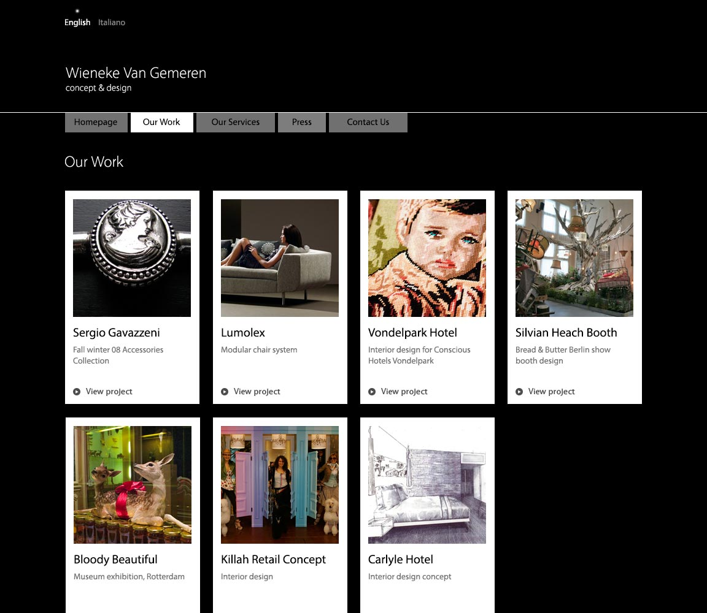
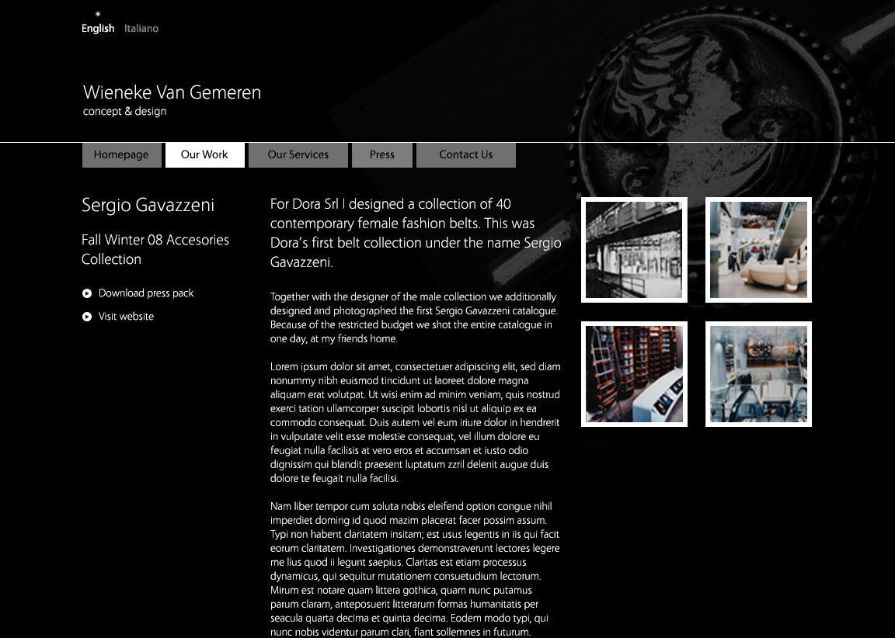
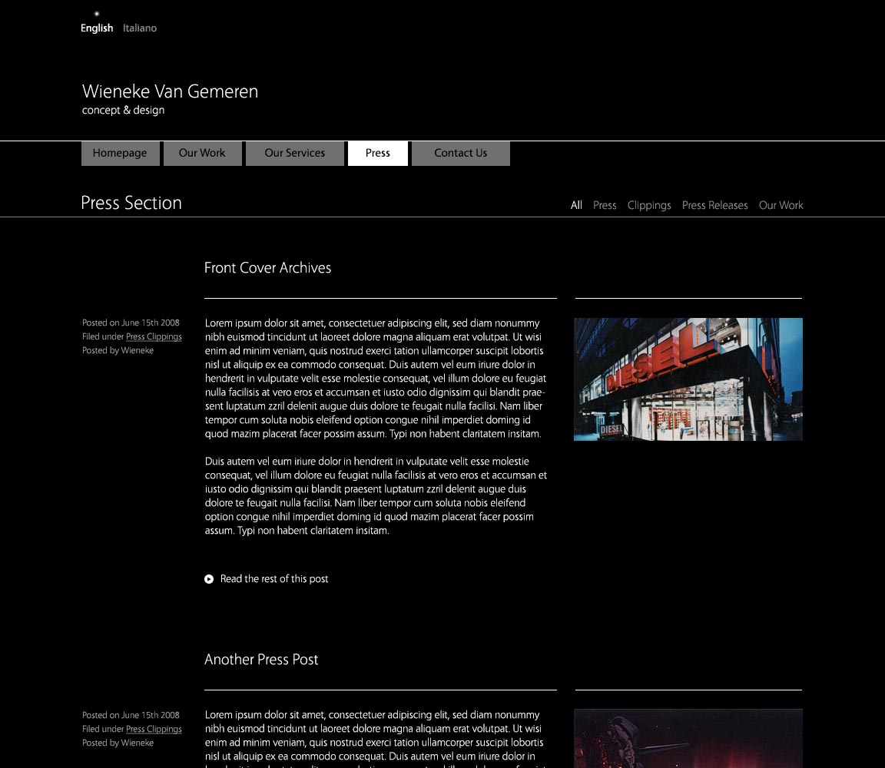

Description: Design and build for dutch interior and product designer Wieneke Van Gemeren.
Wieneke's work walks a fine line between contempary and quirky. The challenge was to create a site that didn't shout louder than the work on show, but also reflected some aspects of Wieneke's design approach which is often eclectic, without being fussy or cluttered.

This site was built in 2008, when webfonts were a new addition to the web. This site uses Vegur, a high quality clone of Myriad Pro which wasn't licensed for online use at the time.

This website is no longer maintained by me. In 2010, design and development was taken over by Nowton & Pronk, a talented agency based in the Rotterdam, much closer to the client. However I'm pleased to see that some elements of my original design such as desaturated background imagery and the projects indexes are still present in the current build.

Whilst I would certainly do somethings differently if I were to design and build this site today (it would be well suited to a responsive grid), I think it's a design that has held up well over 4 years in a field where tastes and trends change seemingly with the wind.